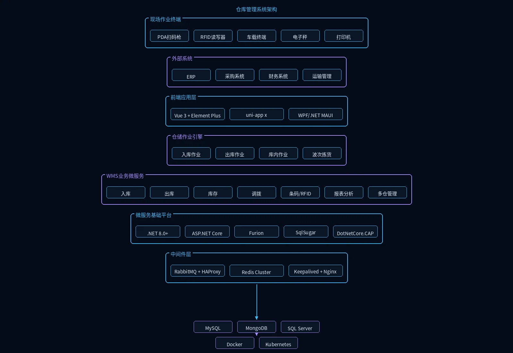

工程项目物资种类繁杂、周转频繁，传统手工管理方式易导致库存不准、物资积压或短缺。仓库管理系统覆盖需求提报、验收入库、出库领用、劳保用品与工器具领用管控、盘点清查与废旧处置等全流程，实现多仓联动与物料追溯，帮助企业精准掌控库存、降低仓储成本、保障施工物资及时供应。
核心功能
需求管理
实时查看库存数据与预警状态，支持按物料、班组发起领料申请，并跟踪申领进度与库存分析。
审核管理
对物料申领、入库单与出库单进行多级审核与电子签名，确保物资流转经过授权审批。
验收管理
对采购到货、调拨及集采物资进行数量与质量验收，支持分批验收、补货跟踪与合格品入库。
入库管理
管理验收合格物料的入库登记、库位分配与入库流水查询，支持采购入库与退货处理。
出库管理
按领料申请进行物料出库清点、库位分配与出库流水记录，支持退库与作废操作。
盘点管理
定期或临时对仓库物料进行库存盘点，支持扫码盘点、批量操作与盘盈盘亏调整。
废旧物资
对报废物料进行登记、盘点与流水管理，追踪废旧物资的处置状态与数量变化。
班组消耗
按班组统计物料领用与消耗情况，分析各施工班组的材料使用成本与效率。
劳保工器具
定义劳保用品与工器具的领用周期及以旧换新规则，支持按物料、按人发放劳保用品，按班组领取工器具，领取时自动提示上次领取时间，并可查询工器具领用记录与持有人。
土方管理
管理土方作业面与车辆档案，跟踪运输轨迹并按日、月统计装土、填土、弃土作业量。
基础维护
维护物料清单、物料分类定义、供应商库、库位信息与审批流程配置，支撑仓储业务正常运转。
应用场景

多仓联动库存管控
集团总部仓、区域仓与项目仓多级库存统一管理，实时掌握全局库存状态与预警信息，实现物资按需调配与库存精准控制。

物料验收与入库追踪
对到货物资进行数量与质量验收，合格品完成入库登记与库位分配，支持分批验收与补货跟踪，确保入库数据准确可追溯。

班组领料与消耗分析
施工班组按需求发起领料申请，经审批后完成出库清点与流水记录，系统按月统计各班组材料消耗，辅助成本核算与效率分析。

库存盘点与废旧管理
仓库管理员按库位对物料进行扫码盘点，支持批量操作与盘盈盘亏调整；废旧物料清点登记后生成报废记录，全程追踪处置状态，确保账实一致。
系统优势
支持条码/RFID识别，与ERP、采购、销售系统深度集成。适配非洲本地网络环境，支持离线操作与数据同步，确保在网络不稳定地区也能正常使用。
系统架构

系统采用仓储全流程+作业引擎架构：PDA扫码枪、RFID读写器、车载终端、电子秤与打印机构成五类现场作业终端；独立仓储作业引擎层涵盖入库、出库、库内与波次拣货四大引擎，驱动收货→质检→上架与订单聚合→拣货路径优化全流程；条码/RFID服务实时采集作业数据，库存服务基于Redis Cluster实现高并发扣减，调拨服务基于DotNetCore.CAP保障分布式事务一致性；多仓管理服务统一管控集团总部仓、区域仓与项目仓。